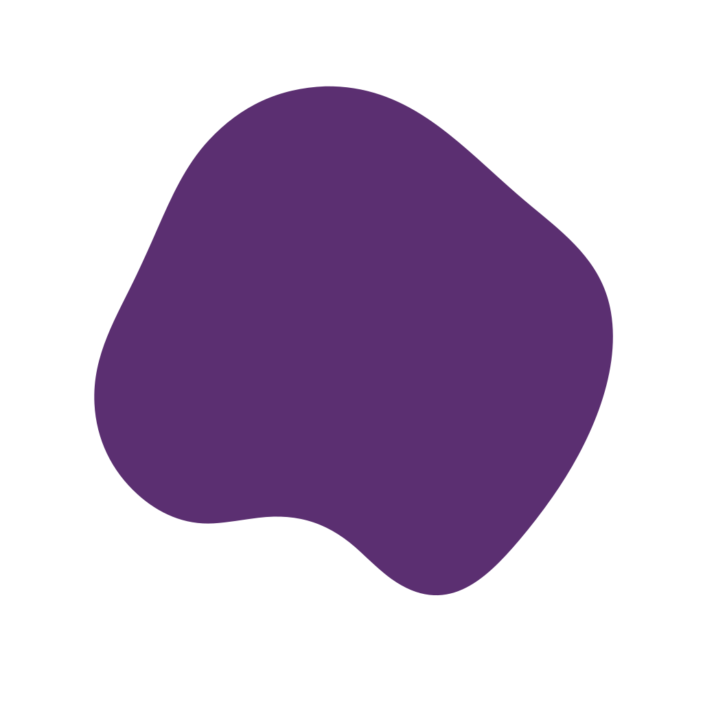
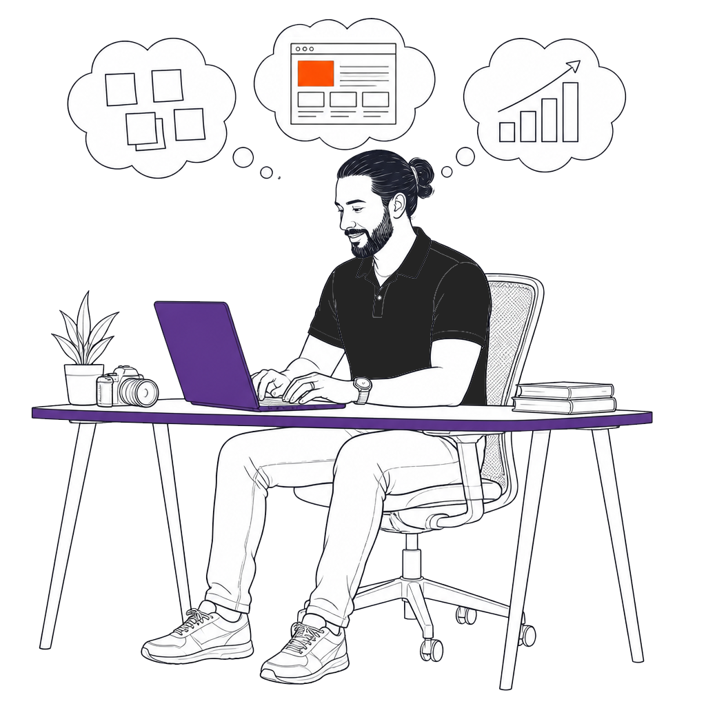
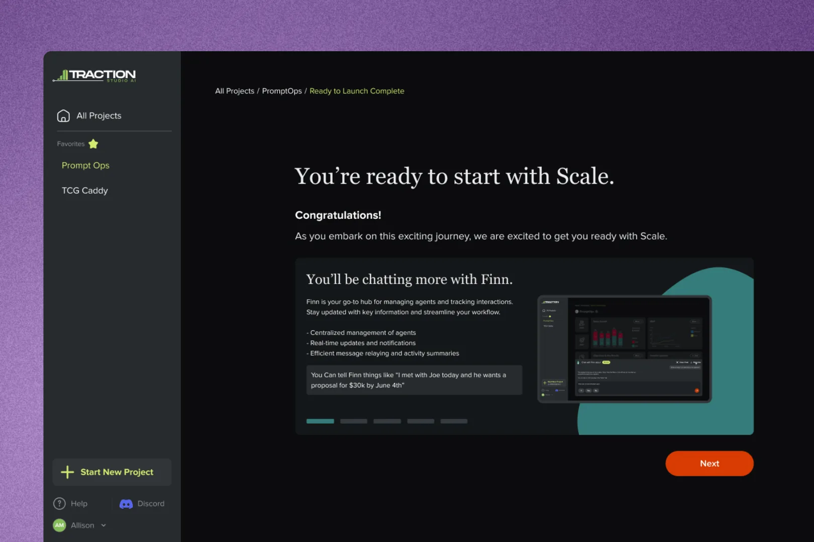
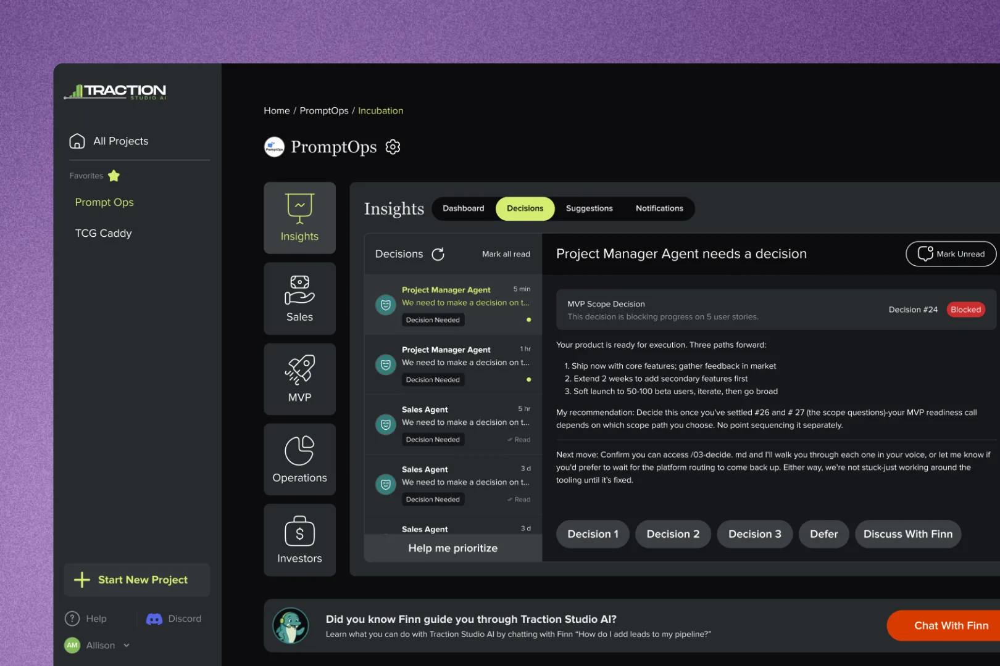
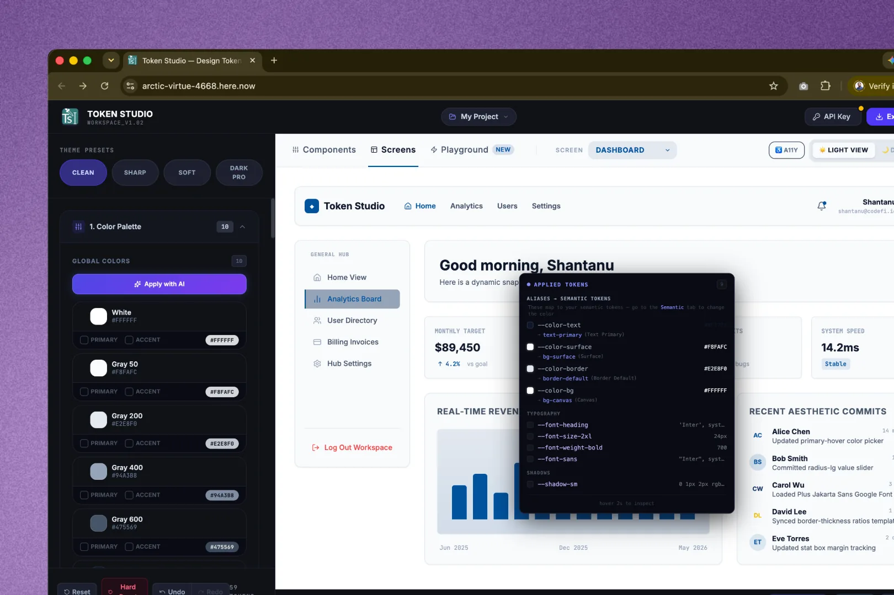
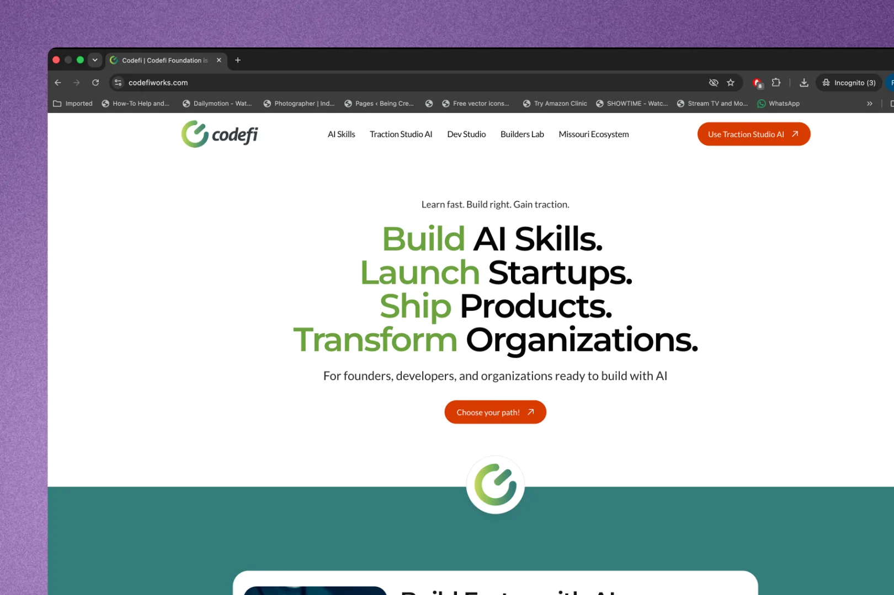
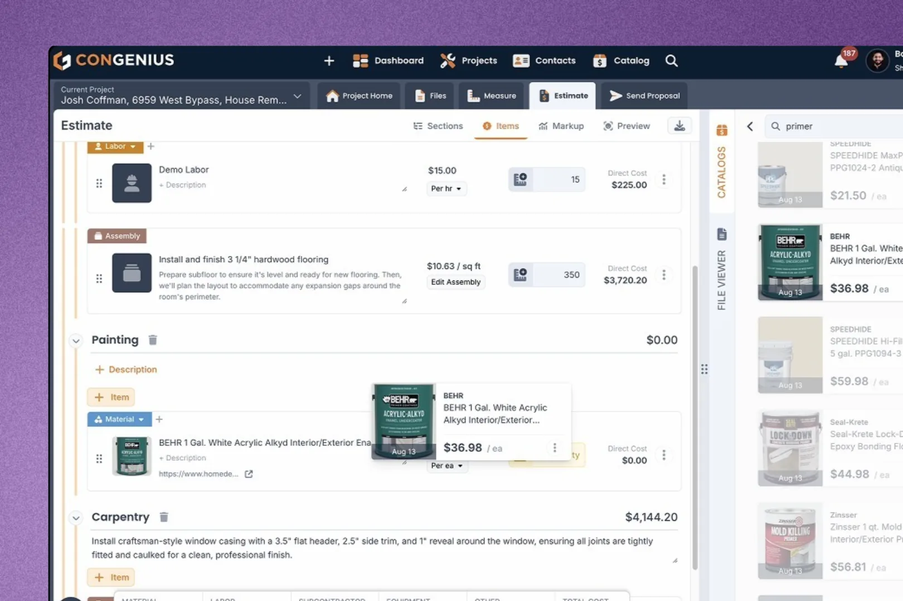
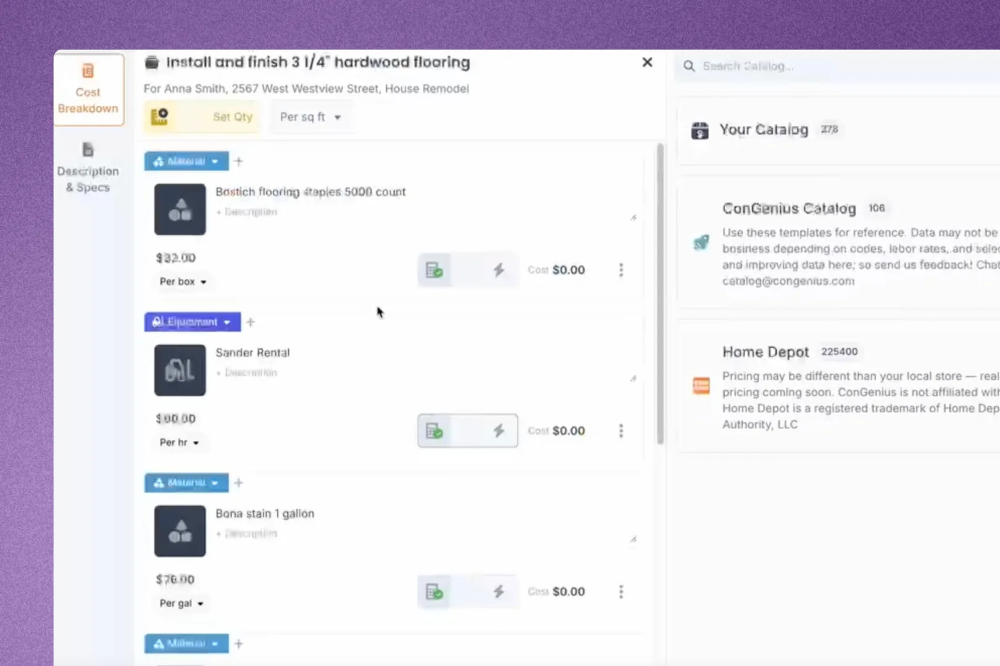
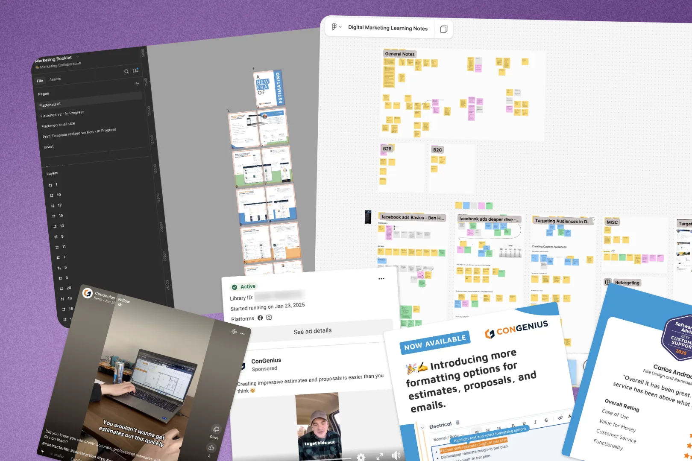

I turned a 60-second wait into onboarding that builds momentum.
First or only designer everywhere I've worked, from a single screen to the strategy behind it.


Traction Studio AI
The AI-native founder platform I'm the sole product designer on at Codefi, plus the growth work I took on alongside it.

The loading screen became the onboarding.Five slides, timed to the exact wait
Engineering needed 5–60 seconds to build a founder's workspace. They asked for a loading screen. I shipped a 5-slide walkthrough that used the exact window they needed and oriented people to a surface they'd never seen.
Shipped Read more →
Four modules, one component system.The paid product, built from scratch
The entire paid surface, 0→1, with our PO (sales, ops, investor relations, MVP tracking, agents) on one component system, down to full light/dark theming.
In progress Read more →
Two systems, neither of them a roadmap item.Tooling I built to move faster
A token system built before a line of code existed, and an MCP-based content engine now running in production. Different projects, same instinct.
Built, twice Read more →
Copy changes stopped being dev tickets.Website & CMS rebuild
Moved Codefi off a hardcoded site with no CMS onto Framer, with four live content collections the team updates themselves.
Shipped Read more → Two written proposals, both adopted.A strategy the company adopted, twice
Wrote the GTM thesis after our lander drew 2,500 views and zero conversions; the team adopted it. Later traced through analytics that our AI-drafted content wasn't landing with the B2B audience. I'm leading that rewrite now.
Adopted, ongoing Read more → 60%+ attribution. 5–20 → ~135 turnout.Ads that filled four in-person hackathons
Ad strategy, creative, and budget across Vibeathon, Codefi Foundation's AI hackathon series in Joplin, St. Joseph, Springfield and Cape Girardeau. Also built the vibeathon.us brand and visual system.
Measured Read more →ConGenius
Sole designer at an early-stage construction SaaS for three years, from ideation through 1.0.

Enter the work first, structure it after.Letting estimators enter work their way
Rebuilt a multi-hour, rigid estimating flow around freeform entry, straight from what users kept asking for.
Shipped Read more →
Priced once, reused on every estimate.A shared price list that cuts rework
A shared catalog and prebuilt assemblies that cut repeat data entry out of every estimate.
Shipped Read more →
41 creatives, ~2,700 conversions.Running marketing alongside the product work
Ran Meta campaigns and a brand refresh, stepping into a hybrid marketing role to support growth.
Measured Read more →That's the work. The About page covers how I approach it, and the photography I do →